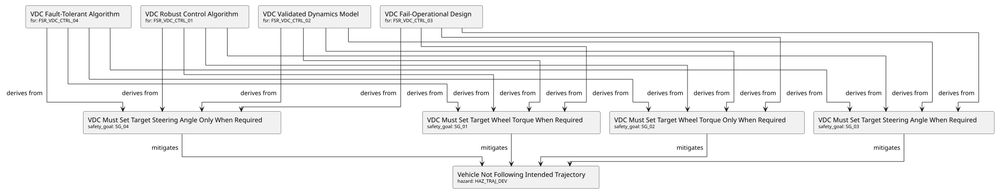
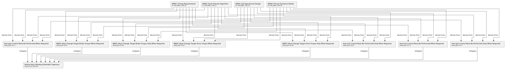
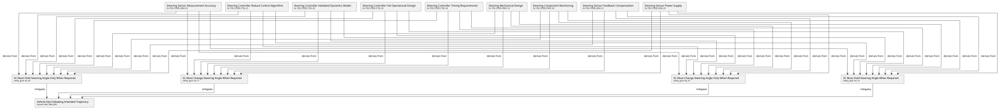
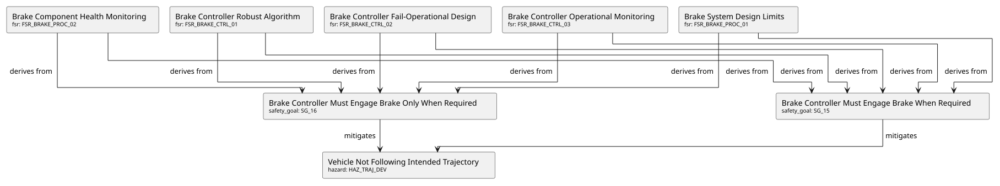
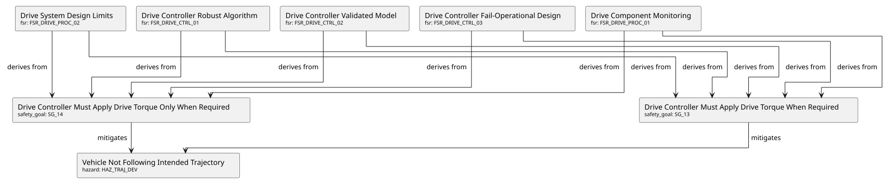

Demo page details
Page source code: analysis.rst
1
2
3
4
5
6
7
8
9
10
11
12
13
14
15
16
17
18
19
20
21
22
23
24
25
26
27
28
29
30
31
32
33
34
35
36
37
38
39
40
41
42
43
44
45
46
47
48
49
50
51
52
53
54
55
56
57
58
59
60
61
62
63
64
65
66
67
68
69
70
71
72
73
74
75
76
77
78
79
80
81
82
83
84
85
86
87
88
89
90
91
92
93
94
95
96
97
98
99
100
101
102
103
104
105
106
107
108
109
110
111
112
113
114
115
116
117
118
119
120
121
122
123
124
125
126
127
128
129
130
131
132
133
134
135
136
137
138
139
140
141
142
143
144
145
146
147
148
149
150
151
152
153
154
155
156
157
158
159
160
161
162
163
164
165
166
167
168
169
170
171
172
173
174
175
176
177
178
179
180
181
182
183
184
185
186
187
188
189
190
191
192
193
194
195
196
197
198
199
200
201
202
203
204
205
206
207
208
209
210
211
212
213
214
215
216
217
218
219
220
221
222
223
224
225
226
227
228
229
230
231
232
233
234
235
236
237
238
239
240
241
242
243
244
245
246
247
248
249
250
251
252
253
254
255
256
257
258
259
260
261
262
263
264
265
266
267
268
269
270
271
272
273
274
275
276
277
278
279
280
281
282
283
284
285
286
287
288
289
290
291
292
293
294
295
296
297
298
299
300
301
302
303
304
305
306
307
308
309
310
311📊 Safety Traceability Analysis
This page provides comprehensive visualization and analysis of the complete safety artifact traceability chain from hazards through safety goals and functional safety requirements to system requirements.
Complete Safety Traceability
This diagram shows the complete traceability from the top-level hazard through all 20 safety goals, 30+ functional safety requirements, to 18 system requirements.
Safety Artifacts Overview
Complete list of all safety artifacts with key metadata.
ASIL Distribution Analysis
Distribution of Safety Artifacts by Type
Safety Artifacts by Type
Safety Goals by Subsystem
Safety Goals by Subsystem
FSRs by Subsystem
FSRs by Subsystem
Critical Path Analysis
Vehicle Dynamics Controller Critical Path
Traceability from hazard through VDC safety goals to VDC FSRs.

Wheel Rotational Dynamics Controller Critical Path
Traceability from hazard through WRDC safety goals to WRDC FSRs.

Steering System Critical Path
Traceability from hazard through steering safety goals to steering FSRs.

Brake System Critical Path
Traceability from hazard through brake safety goals to brake FSRs.

Drive System Critical Path
Traceability from hazard through drive safety goals to drive FSRs.

Safety Goal Coverage
Coverage of Safety Goals by FSRs
This table shows which FSRs derive from each safety goal, providing visibility into requirement decomposition completeness.
FSR Completeness Analysis
FSRs by Category
Controller FSRs
| ID | Title | Automotive Safety Integrity Level (ISO 26262) | Status |
|---|---|---|---|
| FSR_BRAKE_CTRL_01 | Brake Controller Robust Algorithm | D | open |
| FSR_BRAKE_CTRL_02 | Brake Controller Fail-Operational Design | D | open |
| FSR_BRAKE_CTRL_03 | Brake Controller Operational Monitoring | D | open |
| FSR_DRIVE_CTRL_01 | Drive Controller Robust Algorithm | D | open |
| FSR_DRIVE_CTRL_02 | Drive Controller Validated Model | D | open |
| FSR_DRIVE_CTRL_03 | Drive Controller Fail-Operational Design | D | open |
| FSR_POWER_02 | Controller Power Supply Continuity | D | open |
| FSR_STEER_CTRL_01 | Steering Controller Robust Control Algorithm | D | open |
| FSR_STEER_CTRL_02 | Steering Controller Validated Dynamics Model | D | open |
| FSR_STEER_CTRL_03 | Steering Controller Fail-Operational Design | D | open |
| FSR_STEER_CTRL_04 | Steering Controller Timing Requirements | D | open |
Sensor FSRs
| ID | Title | Automotive Safety Integrity Level (ISO 26262) | Status |
|---|---|---|---|
| FSR_STEER_SENS_01 | Steering Sensor Feedback Compensation | D | open |
| FSR_STEER_SENS_02 | Steering Sensor Power Supply | D | open |
| FSR_STEER_SENS_03 | Steering Sensor Measurement Accuracy | D | open |
| FSR_VEHICLE_SENS_01 | Vehicle Motion Sensor Feedback | D | open |
| FSR_VEHICLE_SENS_02 | Vehicle Motion Sensor Accuracy | D | open |
| FSR_VEHICLE_SENS_03 | Vehicle Motion Sensor Timing | D | open |
| FSR_WHEEL_SENS_01 | Wheel Motion Sensor Compensation | D | open |
| FSR_WHEEL_SENS_02 | Wheel Motion Sensor Power | D | open |
Process FSRs
| ID | Title | Automotive Safety Integrity Level (ISO 26262) | Status |
|---|---|---|---|
| FSR_BRAKE_PROC_02 | Brake Component Health Monitoring | D | open |
| FSR_DRIVE_PROC_01 | Drive Component Monitoring | D | open |
| FSR_STEER_PROC_02 | Steering Component Monitoring | D | open |
Power Supply FSRs
| ID | Title | Automotive Safety Integrity Level (ISO 26262) | Status |
|---|---|---|---|
| FSR_POWER_01 | Actuator Power Supply Continuity | D | open |
| FSR_POWER_02 | Controller Power Supply Continuity | D | open |
| FSR_STEER_SENS_02 | Steering Sensor Power Supply | D | open |
| FSR_WHEEL_SENS_02 | Wheel Motion Sensor Power | D | open |
FSR Implementation Coverage
This table shows which System Requirements implement each FSR, providing visibility into the decomposition from functional safety requirements to concrete system specifications.
System Requirements Analysis
SYSREQs by Subsystem
System Requirements by Subsystem
VDC System Requirements
| ID | Title | Automotive Safety Integrity Level (ISO 26262) | Status |
|---|---|---|---|
| SYSREQ_VDC_01 | VDC Trajectory Tracking Accuracy | D | open |
| SYSREQ_VDC_02 | VDC Dual-Redundant Processing Architecture | D | open |
| SYSREQ_VDC_03 | VDC Multi-Sensor Fusion System | D | open |
| SYSREQ_VDC_04 | VDC Graceful Degradation Controller | D | open |
WRDC System Requirements
| ID | Title | Automotive Safety Integrity Level (ISO 26262) | Status |
|---|---|---|---|
| SYSREQ_WRDC_01 | WRDC Single Wheel Fault Tolerance | D | open |
| SYSREQ_WRDC_02 | WRDC Tire Friction Estimation System | D | open |
| SYSREQ_WRDC_03 | WRDC ABS/ASR Coordination Logic | D | open |
| SYSREQ_WRDC_04 | WRDC High-Frequency Control Loop | D | open |
Steering System Requirements
| ID | Title | Automotive Safety Integrity Level (ISO 26262) | Status |
|---|---|---|---|
| SYSREQ_STEER_01 | Steering Robust Control Algorithm | D | open |
| SYSREQ_STEER_02 | Steering Validated Dynamics Model | D | open |
| SYSREQ_STEER_03 | Steering Redundant Execution Architecture | D | open |
| SYSREQ_STEER_04 | Steering High-Resolution Feedback System | D | open |
Brake System Requirements
| ID | Title | Automotive Safety Integrity Level (ISO 26262) | Status |
|---|---|---|---|
| SYSREQ_BRAKE_01 | Brake Dual-Circuit Hydraulic Architecture | D | open |
| SYSREQ_BRAKE_02 | Brake Surface Friction Adaptation | D | open |
| SYSREQ_BRAKE_03 | Brake Component Monitoring System | D | open |
Drive System Requirements
| ID | Title | Automotive Safety Integrity Level (ISO 26262) | Status |
|---|---|---|---|
| SYSREQ_DRIVE_01 | Drive Torque Control System | D | open |
| SYSREQ_DRIVE_02 | Drive Limp-Home Mode Architecture | D | open |
| SYSREQ_DRIVE_03 | Drive Electrical and Thermal Protection | D | open |
ASIL D Requirements Summary
All safety artifacts in this example are assigned ASIL D, the highest automotive safety integrity level. This demonstrates the safety-critical nature of vehicle actuation systems in automated driving.
Total Safety Artifacts:
1 Hazard (HAZ_TRAJ_DEV)
20 Safety Goals (SG_01 to SG_20)
30+ Functional Safety Requirements
18 System Requirements
ISO 26262 Compliance:
All hazards have ASIL assignment with rationale
All safety goals mitigate identified hazards
All FSRs derive from safety goals
All SYSREQs implement FSRs with concrete specifications
Complete traceability chain maintained (HAZ → SG → FSR → SYSREQ)
Schema validation ensures compliance
STPA-Based Derivation:
This example demonstrates the STPA (System-Theoretic Process Analysis) methodology applied to vehicle actuation systems:
Control Structure Analysis: Hierarchical control from trajectory input through VDC/WRDC to individual actuators
Unsafe Control Actions: Systematic identification of "when required" and "only when required" conditions
Causal Factor Analysis: Control loop components (sensors, processes, controllers, actuators) analyzed for failure modes
Requirement Derivation: Safety goals and FSRs derived from causal factors
Verification and Validation
The safety artifacts in this example would typically be verified through:
Requirements Review: Completeness, consistency, correctness
Design Review: Architectural safety mechanisms, fault tolerance
FMEA/FTA: Failure modes and fault trees analysis
Hardware-in-the-Loop Testing: Controller validation with real actuators
Vehicle Testing: Full system validation on test track
ISO 26262 Audit: Independent safety assessment
See also
ISO 26262-3:2018 - Concept phase (HARA, safety goals)
ISO 26262-4:2018 - Product development at system level (FSRs, system architecture)
ISO 26262-6:2018 - Product development at software level
Research paper: Stolte, Bagschik, Maurer, "Safety Goals and Functional Safety Requirements for Actuation Systems of Automated Vehicles," IEEE ITSC 2016